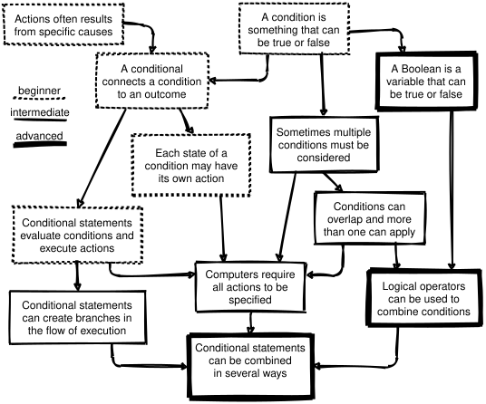
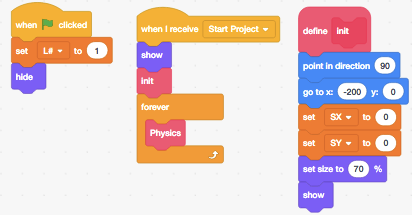
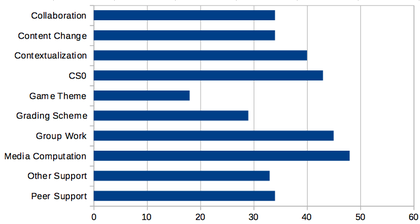

7 Pedagogical Content Knowledge
Every teacher needs three things:
- content knowledge
- such as how to program;
- general pedagogical knowledge
- such as an understanding of the psychology of learning; and
- pedagogical content knowledge
- (PCK), which is the domain-specific knowledge of how to teach a particular concept to a particular audience. In computing, PCK includes things like what examples to use when teaching how parameters are passed to a function or what misconceptions about nesting HTML tags are most common.
We can add technical knowledge to this mix (Koehler et al. 2013), but that doesn’t change the key point: it isn’t enough to know the subject and how to teach—you have to know how to teach that particular subject (Mayer 2004). This chapter therefore summarizes some results from computing education research that will add to your store of PCK.
As with all research, some caution is required when interpreting results:
- Theories change as more data becomes available.
- Computing education research (CER) is a young discipline: the American Society for Engineering Education was founded in 1893 and the National Council of Teachers of Mathematics in 1920, but the Computer Science Teachers Association didn’t exist until 2005. While a steady stream of new insights are reported at conferences like SIGCSE, ITiCSE, and ICER, we simply don’t know as much about learning to program as we do about learning to read, play a sport, or do basic arithmetic.
- Most of these studies’ subjects are WEIRD:
- they are from Western, Education, Industrialized, Rich, and Democratic societies (Henrich et al. 2010). What’s more, they are also mostly young and in institutional classrooms, since that’s the population most researchers have easiest access to. We know much less about adults, members of marginalized groups, learners in free-range settings, or end-user programmers, even though there are far more of them.
If this was an academic treatise, I would therefore preface most claims with qualifiers like, “Some research may seem to indicate that…” But since actual teachers in actual classrooms have to make decisions regardless of whether research has clear answers yet or not, this chapter presents actionable best guesses rather than nuanced perhapses.
Like any specialty, CER has jargon. CS1 refers to an introductory semester-long course in which learners meet variables, loops, and functions for the first time, while CS2 refers to a second course that covers basic data structures like stacks and queues, and CS0 refers to an introductory course for people without any prior experience who aren’t intending to continue with computing right away. Full definitions for these terms can be found in the ACM Curriculum Guidelines.
7.1 What Are We Teaching Them Now?
Very little is known about what coding bootcamps and other free-range initiatives teach, in part because many are reluctant to share their curriculum. We know more about what is taught by institutions (Luxton-Reilly et al. 2017):
| Topic | % | Topic | % |
|---|---|---|---|
| Programming Process | 87% | Data Types | 23% |
| Abstract Programming Thinking | 63% | Input/Output | 17% |
| Data Structures | 40% | Libraries | 15% |
| Object-Oriented Concepts | 36% | Variables & Assignment | 14% |
| Control Structures | 33% | Recursion | 10% |
| Operations & Functions | 26% | Pointers & Memory Management | 5% |
High-level topic labels like these can hide a multitude of sins. A more tangible result comes from (Rich et al. 2017), which reviewed a hundred articles to find learning trajectories for computing classes in elementary and middle schools. Their results for sequencing, repetition, and conditionals are essentially collective concept maps that combine and rationalize the implicit and explicit thinking of many different educators (Figure 7.1).

7.2 How Much Are They Learning?
There can be a world of difference between what teachers teach and how much learners learn. To explore the latter, we must use other measures or do direct studies. Taking the former approach, roughly two-thirds of post-secondary students pass their first computing course, with some variations depending on class size and so on, but with no significant differences over time or based on language Watson and Li (2014).
How does prior experience affect these results? To find out, (Wilcox and Lionelle 2018) compared the performance and confidence of novices with and without prior programming experience in CS1 and CS2 (see below). They found that novices with prior experience outscored novices without by 10% in CS1, but those differences disappeared by the end of CS2. They also found that women with prior exposure outperformed their male peers in all areas, but were consistently less confident in their abilities (Section 10.4).
As for direct studies of how much novices learn, (McCracken et al. 2001) presented a multi-site international study that was later replicated by (Utting et al. 2013). According to the first study, “…the disappointing results suggest that many students do not know how to program at the conclusion of their introductory courses.” More specifically, “For a combined sample of 216 students from four universities, the average score was 22.89 out of 110 points on the general evaluation criteria developed for this study.” This result may say as much about teachers’ expectations as it does about student ability, but either way, our first recommendation is to measure and track results in ways that can be compared over time so that you can tell if your lessons are becoming more or less effective.
7.3 What Misconceptions Do Novices Have?
Chapter 2 explained why clearing up novices’ misconceptions is just as important as teaching them strategies for solving problems. The biggest misconception novices have—sometimes called the “superbug” in coding—is the belief that computers understand what people mean in the way that another human being would (Pea 1986). Our second recommendation is therefore to teach novices that computers don’t understand programs, i.e. that calling a variable “cost” doesn’t guarantee that its value is actually a cost.
(Sorva 2018) presents over forty other misconceptions that teachers can also try to clear up, many of which are also discussed in (Qian and Lehman 2017)’s survey. One is the belief that variables in programs work the same way they do in spreadsheets, i.e. that after executing:
grade = 65
total = grade + 10
grade = 80
print(total)the value of total will be 90 rather than 75 (Kohn 2017). This is an example of the way in which novices construct a plausible-but-wrong mental model by making analogies; other misconceptions include:
A variable holds the history of the values it has been assigned, i.e. it remembers what its value used to be.
Two objects with the same value for a
nameoridattribute are guaranteed to be the same object.Functions are executed as they are defined, or are executed in the order in which they are defined.
A
whileloop’s condition is constantly evaluated, and the loop stops as soon as it becomes false. Conversely, the conditions inifstatements are also constantly evaluated, and their statements are executed as soon as the condition becomes true regardless of where the flow of control is at the time.Assignment moves values, i.e. after
a = b, the variablebis empty.
7.4 What Mistakes Do Novices Make?
The mistakes novices make can tell us what to prioritize in our teaching, but it turns out that most teachers don’t know how common different kinds of mistakes actually are. The largest study of this is (Brown and Altadmri 2017), which found that mismatched quotes and parentheses are the most common type of errors in novice Java programs, but also the easiest to fix, while some mistakes (like putting the condition of an if in {} instead of ()) are most often made only once. Unsurprisingly, mistakes that produce compiler errors are fixed much faster than ones that don’t. Some mistakes, however, are made many times, like invoking methods with the wrong arguments (e.g. passing a string instead of an integer).
One difficulty in research like this is distinguishing mistakes from work in progress. For example, an empty if statement or a method that is defined but not yet used may be a sign of incomplete code rather than an error.
(Brown and Altadmri 2017) also compared the mistakes novices actually make with what their teachers thought they made. They found that, “…educators formed only a weak consensus about which mistakes are most frequent, that their rankings bore only a moderate correspondence to the students in the…data, and that educators’ experience had no effect on this level of agreement.” For example, mistaking = (assignment) and == (equality) wasn’t nearly as common as most teachers believed.
(Park et al. 2015) collected data from an online HTML editor during an introductory web development course and found that nearly all learners made syntax errors that remained unresolved weeks into the course. 20% of these errors related to the relatively complex rules that dictate when it is valid for HTML elements to be nested in one another, but 35% related to the simpler tag syntax determining how HTML elements are nested. The tendency of many teachers to say, “But the rules are simple,” is a good example of expert blind spot discussed in Chapter 3…
7.5 How Do Novices Program?
Soloway (1986) pioneered the exploration of novice and expert programming strategies. The key finding is that experts know both “what” and “how,” i.e. they understand what to put into programs and they have a set of program patterns or plans to guide their construction. Novices lack both, but most teachers focus solely on the former, even though bugs are often caused by not having a strategy for solving the problem rather than to lack of knowledge about the language. Recent work has shown the effectiveness of teaching four distinct skills in a specific order (Xie et al. 2019):
| semantics of code | templates related to goals | |
|---|---|---|
| reading} | 1. read code and predict behavior | 3. recognize templates and their uses |
| writing} | 2. write correct syntax | 4. use templates to meet goals |
Our next recommendations are therefore to have learners read code, then modify it, then write it, and to introduce common patterns explicitly and have learners practice using them. (Muller et al. 2007) is just one of many studies proving the benefits of teaching common patterns explicitly, and decomposing problems into patterns creates natural opportunities for creating and labeling subgoals Margulieux et al. (2016).
7.6 How Do Novices Debug?
A decade ago, (McCauley et al. 2008) wrote, “It is surprising how little page space is devoted to bugs and debugging in most introductory programming textbooks.” Little has changed since: there are hundreds of books on compilers and operating systems, but only a handful about debugging, and I have never seen an undergraduate course devoted to the subject.
Lister et al. (2009) found that many novices struggled to predict the output of short pieces of code and to select the correct completion of the code from a set of possibilities when told what it was supposed to do. More recently, (Harrington and Cheng 2018) found that the gap between being able to trace code and being able to write it has largely closed by CS2, but that novices who still have a gap (in either direction) are likely to do poorly.
Our fifth recommendation is therefore to explicitly teach novices how to debug. Murphy et al. (2008) found that good debuggers were good programmers, but not all good programmers were good at debugging. Those who were used a symbolic debugger to step through their programs, traced execution by hand, wrote tests, and re-read the spec frequently, which are all teachable habits. However, tracing execution step by step was sometimes used ineffectively: for example, a novice might put the same print statement in both parts of an if-else. Novices would also comment out lines that were actually correct as they tried to isolate a problem; teachers can make both of these mistakes deliberately, point them out, and correct them to help novices get past them.
Teaching novices how to debug can also help make classes easier to manage. (Alqadi and Maletic 2017) found that learners with more experience solved debugging problems significantly faster, but times varied widely: 4–10 minutes was a typical range for individual exercises, which means that some learners need 2–3 times longer than others to get through the same exercises. Teaching the slower learners what the faster ones are doing will help make the group’s overall progress more uniform.
Debugging depends on being able to read code, which multiple studies have shown is the single most effective way to find bugs Bacchelli and Bird (2013). The code quality rubric developed in Stegeman et al. (2016) is a good checklist of things to look for, though it is best presented in chunks rather than all at once.
Having learners read code and summarize its behavior is a good exercise (Section 5.1), but often takes too long to be practical in class. Having them predict a program’s output just before it is run, on the other hand, helps reinforce learning (Section 9.11) and also gives them a natural moment to ask “what if” questions. Teachers or learners can also trace changes to variables as they go along, which (Cunningham et al. 2017) found was effective (Section 12.2).
7.7 What About Testing?
Novice programmers seem just as reluctant to test software as professionals. There’s no doubt that doing it is valuable—(Carter and Hundhausen 2017) found that high-performing novices spent a lot of time testing, while low performers spent much more time working on code with errors—and many teachers require learners to write tests for assignments. But how well do they do this? One answer comes from (Brian et al. 2015), which scored learners’ programs by how many teacher-provided test cases those programs passed, and conversely scores test cases written by learners according to how many deliberately-seeded bugs they caught. They found that novices’ tests often have low coverage (i.e. they don’t test most of the code) and that they often test many things at once, which makes it hard to pinpoint the causes of errors.
Another answer comes from (Edwards and Shams 2014), which looked at all of the bugs in all novices’ code submissions combined and identified those detected by the novices’ test suite. They found that novices’ tests only detected an average of 13.6% of the faults present in the entire program population. What’s more, 90% of the novices’ tests were very similar, which indicates that novices mostly write tests to confirm that code is doing what it’s supposed to rather than to find cases where it isn’t.
One approach to teaching better testing practices is to define a programming problem by providing a set of tests to be passed rather than through a written description (Section 12.1). Before doing this, though, take a moment to look at how many tests you’ve written for your own code recently, and then decide whether you’re teaching what you believe people should do, or what they (and you) actually do.
7.8 Do Languages Matter?
The short answer is “yes”: novices learn to program faster and learn more using blocks-based tools like Scratch (Figure 7.2) (Weintrop and Wilensky 2017). One reason is that blocks-based systems reduce cognitive load by eliminating the possibility of syntax errors. Another is that block interfaces encourage exploration in a way that text does not: like all good tools, Scratch can be learned accidentally (Maloney et al. 2010).
But what happens after blocks? (Chen et al. 2018) found that learners whose first programming language was graphical had higher grades in introductory programming courses than learners whose first language was textual when the languages were introduced in or before early adolescent years. Our sixth recommendation is therefore to start children and teens with blocks-based interfaces before moving to text-based systems. The age qualification is there because Scratch deliberately looks like it’s meant for younger users, and it can still be hard to convince adults to take it seriously.

Scratch has probably been studied more than any other programming tool. One example is (Aivaloglou and Hermans 2016), which analyzed over 250,000 Scratch projects and found (among other things) that about 28% of projects have some blocks that are never called or triggered. As in the earlier aside about incomplete versus incorrect Java programs, the authors hypothesize that users may be using these blocks as a scratchpad to keep track of bits of code they don’t (yet) want to throw away. Another example is Mladenović et al. (2017), which studied novices learning about loops in Scratch, Logo, and Python. They found that misconceptions about loops are minimized when using a block-based language rather than a text-based language. What’s more, as tasks become more complex (such as using nested loops) the differences become larger.
The creators of programming languages make those languages harder to learn by not doing basic usability testing. For example, (Stefik and Siebert 2013) found that, “…the three most common words for looping in computer science, for, while, and foreach, were rated as the three most unintuitive choices by non-programmers.” Their work shows that C-style syntax (as used in Java and Perl) is just as hard for novices to learn as a randomly designed syntax, but that the syntax of languages such as Python and Ruby is significantly easier to learn, and the syntax of a language whose features are tested before being added to the language is easier still. (Stefik et al. 2017) is a useful brief summary of what we actually know about designing programming languages and why we believe it’s true, while (Guzdial 2016) lays out five principles that programming languages for learners should follow.
Object-Oriented Programming
Objects and classes are power tools for experienced programmers, and many educators advocate an objects first approach to teaching programming (though they sometimes disagree on exactly what that means (Bennedsen and Schulte 2007)). (Sorva and Seppälä 2014) describes and motivates this approach, and (Kölling 2015) describes three generations of tools designed to support novice programming in object-oriented environments.
Introducing objects early has a few challenges. (Miller and Settle 2016) found that most novices using Python struggled to understand self (which refers to the current object): they omitted it in method definitions, failed to use it when referencing object attributes, or both. (Ragonis and Shmallo 2017) found something similar in high school students, and also found that high school teachers often weren’t clear on the concept either. On balance, we recommend that teachers start with functions rather than objects, i.e. that learners not be taught how to define classes until they understand basic control structures and data types.
Type Declarations
Programmers have argued for decades about whether variables’ data types should have to be declared or not, usually based on their personal experience as professionals rather than on any kind of data. Fischer and Hanenberg (2015) found that requiring novices to declare variable types does add some complexity to programs, but it pays off fairly quickly by acting as documentation for a method’s use—in particular, by forestalling questions about what’s available and how to use it.
Variable Naming
(Kernighan and Pike 1999) wrote, “Programmers are often encouraged to use long variable names regardless of context. This is a mistake: clarity is often achieved through brevity.” Lots of programmers believe this, but (Hofmeister et al. 2017) found that using full words in variable names led to an average of 19% faster comprehension compared to letters and abbreviations. In contrast, (Beniamini et al. 2017) found that using single-letter variable names didn’t affect novices’ ability to modify code. This may be because their programs are shorter than professionals’ or because some single-letter variable names have implicit types and meanings. For example, most programmers assume that i, j, and n are integers and that s is a string, while x, y, and z are either floating-point numbers or integers more or less equally.
How important is this? (Binkley et al. 2012) reported that reading and understanding code is fundamentally different from reading prose: “…the more formal structure and syntax of source code allows programmers to assimilate and comprehend parts of the code quite rapidly independent of style. In particular…beacons and program plans play a large role in comprehension.” It also found that experienced developers are relatively unaffected by identifier style, so our recommendation is just to use consistent style in all examples. Since most languages have style guides (e.g. PEP 8 for Python) and tools to check that code follows these guidelines, our full recommendation is to use tools to ensure that all code examples adhere to a consistent style.
7.9 Do Better Error Messages Help?
Incomprehensible error messages are a major source of frustration for novices (and for experienced programmers as well). Several researchers have therefore explored whether better error messages would help alleviate this. For example, (Becker et al. 2016) rewrote some of the Java compiler’s messages so that instead of:
C:\stj\Hello.java:2: error: cannot find symbol
public static void main(string[ ] args)
^
1 error
Process terminated ... there were problems.learners would see:
Looks like a problem on line number 2.
If "string" refers to a datatype, capitalize the 's'!Sure enough, novices given these messages made fewer repeated errors and fewer errors overall.
(Barik et al. 2017) went further and used eye tracking to show that despite the grumblings of compiler writers, people really do read error messages—in fact, they spend 13–25% of their time doing this. However, reading error messages turns out to be as difficult as reading source code, and how difficult it is to read the error messages strongly predicts task performance. Teachers should therefore show learners how to read and interpret error messages. (Marceau et al. 2011) has a rubric for responses to error messages that can be useful in grading such exercises.
Does Visualization Help?
Visualizing program execution is a perennially popular idea, and tools like the Online Python Tutor (Guo 2013) and Loupe (which shows how JavaScript’s event loop works) are useful teaching aids. However, people learn more from constructing visualizations than they do from viewing visualizations constructed by others Cetin and Andrews-Larson (2016), so does visualization actually help learning?
To answer this, (Cunningham et al. 2017) replicated an earlier study of the kinds of sketching learners do when tracing code execution. They found that not sketching at all correlates with lower success, while tracing changes to variables’ values by writing new values near their names as they change was the most effective strategy.
One possible confounding effect they checked was time: since sketchers take significantly more time to solve problems, do they do better just because they think for longer? The answer is no: there was no correlation between the time taken and the score achieved. Our recommendation is therefore to teach learners to trace variables’ values when debugging.
One often-overlooked finding about visualization is that people understand flowcharts better than pseudocode if both are equally well structured (Scanlan 1989). Earlier work showing that pseudocode outperformed flowcharts used structured pseudocode and tangled flowcharts; when the playing field was leveled, novices did better with the graphical representation.
7.10 What Else Can We Do to Help?
(Vihavainen et al. 2014) examined the average improvement in pass rates of various kinds of intervention in programming classes. They point out that there are many reasons to take their findings with a grain of salt: the pre-change teaching practices are rarely stated clearly, the quality of change is not judged, and only 8.3% of studies reported negative findings, so either there is positive reporting bias or the way we’re teaching right now is the worst possible and anything would be an improvement. And like many other studies discussed in this chapter, they were only looking at university classes, so their findings may not generalize to other groups.
With those caveats in mind, they found ten things teachers can do to improve outcomes (Figure 7.3):
- Collaboration
- Activities that encourage learner collaboration either in classrooms or labs.
- Content Change
- Parts of the teaching material were changed or updated.
- Contextualization
- Course content and activities were aligned towards a specific context such as games or media.
- CS0
- Creation of a preliminary course to be taken before the introductory programming course; could be organized only for some (e.g. at-risk) learners.
- Game Theme
- A game-themed component was introduced to the course.
- Grading Scheme
- A change in the grading scheme, such as increasing the weight of programming activities while reducing that of the exam.
- Group Work
- Activities with increased group work commitment such as team-based learning and cooperative learning.
- Media Computation
- Activities explicitly declaring the use of media computation (Chapter 10).
- Peer Support
- Support by peers in form of pairs, groups, hired peer mentors or tutors.
- Other Support
- An umbrella term for all support activities, e.g. increased teacher hours, additional support channels, etc.

This list highlights the importance of cooperative learning. (Beck and Chizhik 2013) looked at this specifically over three academic years in courses taught by two different teachers and found significant benefits overall and for many subgroups. The cooperators had higher grades and left fewer questions blank on the final exam, which indicates greater self-efficacy and willingness to try to debug things.
Writing code isn’t the only way to teach people how to program: having novices work on computational creativity exercises improves grades at several levels (Shell et al. 2017). A typical exercise is to describe an everyday object (such as a paper clip or toothbrush) in terms of its inputs, outputs, and functions. This kind of teaching is sometimes called unplugged; the CS Unplugged site has lessons and exercises for doing this.
7.11 Where Next?
For those who want to go deeper, (Fincher and Robins 2019) is a comprehensive summary of CER, (Ihantola et al. 2016) summarizes the methods that studies use most often. I hope that some day we will have catalogs like (Ojose 2015) and more teacher training materials like Sentance et al. (2018) to help us all do better.
Most of the research reported in this chapter was publicly funded but is locked away behind paywalls: at a guess, I broke the law 250 times to download papers from sites like Sci-Hub while writing this book. I hope the day is coming when no one will need to do that; if you are a researcher, please hasten that day by publishing your work in open access venues.
7.12 Exercises
7.12.1 Your Learners’ Misunderstandings (small groups/15 min)
Working in small groups, re-read Section 7.3 and make a list of misconceptions you think your learners have. How specific are they? How would you check how accurate your list is?
7.12.2 Checking for Common Errors (individual/20 min)
These common errors are taken from a longer list in (Sirkiä and Sorva 2012):
- Inverted assignment
- The learner assigns the value of the left-hand variable to the right-hand variable rather than the other way around.
- Wrong branch
-
The learner thinks the code in the body of an
ifis run even if the condition is false. - Executing function instead of defining it
- The learner believes that a function is executed as it is defined.
Write one exercise for each to check that learners aren’t making that mistake.
7.12.3 Mangled Code (pairs/15 min)
(Cheng and Harrington 2017) describes exercises in which learners reconstruct code that has been mangled by removing comments, deleting or replacing lines of code, moving lines, and so on. Performance on these correlates strongly with performance on assessments in which learners write code, but these questions require less work to mark. Take the solution to a programming exercise you’ve created in the past, mangle it in two different ways, swap with a partner, and see how long it takes each of you to answer the other’s question correctly.
7.12.4 The Rainfall Problem (pairs/10 min)
(Soloway 1986) introduced the Rainfall Problem, which has been used in many subsequent studies of programming Seppälä et al. (2015). Write a program that repeatedly reads in positive integers until it reads the integer 99999. After seeing 99999, the program prints the average of the numbers seen.
Solve the Rainfall Problem in the programming language of your choice.
Compare your solution with that of your partner. What does yours do that theirs doesn’t and vice versa?
7.12.5 Roles of Variables (pairs/15 min)
Sajaniemi et al. (2006) presented a set of single-variable patterns that I have found very useful in teaching beginners:
- Fixed value
- A data item that does not get a new proper value after its initialization.
- Stepper
- A data item stepping through a systematic, predictable succession of values.
- Walker
- A data item traversing in a data structure.
- Most-recent holder
- A data item holding the latest value encountered while going through a succession of values.
- Most-wanted holder
- A data item holding the best or most appropriate value encountered so far.
- Gatherer
- A data item accumulating the effect of individual values.
- Follower
- A data item that always gets its new value from the old value of some other data item.
- One-way flag
- A two-valued data item that cannot get its initial value once the value has been changed.
- Temporary
- A data item holding some value for a very short time only.
- Organizer
- A data structure storing elements that can be rearranged.
- Container
- A data structure storing elements that can be added and removed.
Choose a 5–15 line program and classify its variables using these categories. Compare your classifications with those of a partner. Where you disagreed, did you understand each other’s view?
7.12.6 What Are You Teaching? (individual/10 min)
Compare the topics you teach to the list developed in (Luxton-Reilly et al. 2017) (Section 7.1). Which topics do you cover? Which don’t you cover? What extra topics do you cover that aren’t in their list?
7.12.7 Beneficial Activities (individual/10 min)
Look at the list of interventions developed by (Vihavainen et al. 2014) (Section 7.10). Which of these things do you already do in your classes? Which ones could you easily add? Which ones are irrelevant?
7.12.8 Misconceptions and Challenges (small groups/15 min)
The Professional Development for CS Principles Teaching site includes a detailed list of learners’ misconceptions and exercises. Working in small groups, choose one section (such as data structures or functions) and go through their list. Which of these misconceptions do you remember having when you were a learner? Which do you still have? Which have you seen in your learners?
7.12.9 What Do You Care Most About? (whole class/15 min)
(Denny et al. 2019) asked people to propose and rate various CER questions, and found that there was no overlap between those that researchers cared most about and those that non-researchers cared most about. The researchers’ favorites were:
What fundamental programming concepts are the most challenging for students?
What teaching strategies are most effective when dealing with a wide range of prior experience in introductory programming classes?
What affects students’ ability to generalize from simple programming examples?
What teaching practices are most effective for teaching computing to children?
What kinds of problems do students in programming classes find most engaging?
What are the most effective ways to teach programming to various groups?
What are the most effective ways to scale computing education to reach the general student population?
while the most important questions for non-researchers were:
How and when is it best to give students feedback on their code to improve learning?
What kinds of programming exercises are most effective when teaching students Computer Science?
What are the relative merits of project-based learning, lecturing, and active learning for students learning computing?
What is the most effective way to provide feedback to students in programming classes?
What do people find most difficult when breaking problems down into smaller tasks while programming?
What are the key concepts that students need to understand in introductory computing classes?
What are the most effective ways to develop computing competency among students in non-computing disciplines?
What is the best order in which to teach basic computing concepts and skills?
Have each person in the class independently give one point to each of the eight questions from the combined lists that they care most about, then calculate an average score for each question. Which ones are most popular in your class? In which group are the most popular questions?